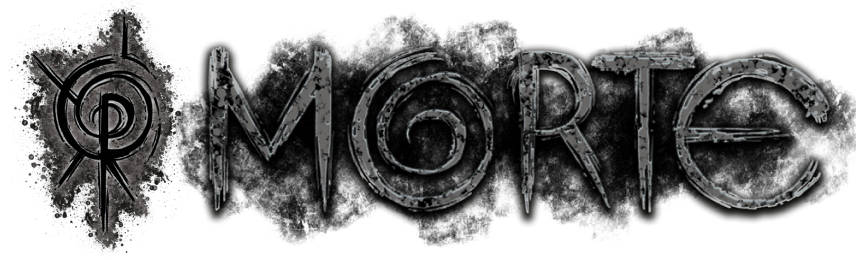

TODAS AS COISAS PRECISAM DE UM FIM
" Como uma espiral no centro de um espaço-tempo infinito, no qual cada instante e ao mesmo tempo eterno e instantâneo, o lodo é um redemoinho e suga e preserva os momentos devorados pela Morte. Essa imensidão espiral encara sua alma, ansiando pelo seu futuro e fazendo você perceber sua insignificância perante ao esplendor do tempo ."
A Morte é a entidade da espiral do tempo. Ela busca os momentos vivenciados, distorcendo a percepção egóica da existência de cada indivíduo para seu agrado. A manifestação física do elemento de Morte na Realidade é o lodo, um líquido preto, gelatinoso e espesso que parece se movimentar por conta própria. O lodo é altamente inflamável e contém um cheiro específico que lembra uma mistura de cinzas, enxofre e mofo. A exposição direta do lodo a materiais orgânicos da Realidade resulta numa espécie de parasitação, com a degradação gradual do material original e o aumento da quantidade de lodo como consequência.
O comportamento da entidade de Morte parece girar em torno de si mesma, buscando a aplicação de “energia potencial” dedicada a espirais. Cada segundo que alguém passa examinando ou contemplando uma espiral é um segundo que esse mesmo alguém poderia estar vivenciando outros momentos, realizando outras ações... Todos esses momentos potenciais que poderiam ter acontecido mas não existiram por causa da Morte são denominados “energia potencial” ou “entropia”, e parecem ser o principal propósito da entidade. A Morte consegue se fortalecer e absorver os momentos que nunca aconteceram graças à própria entidade.
A RELIQUÍA DE MORTE
 Ver mais sobre a Relíquia...AFINIDADE COM MORTE
A afinidade com Morte pode levar a pele acinzentada, cabelos brancos ou pretos, olhos totalmente pretos, marcas faciais, sangue escurecido, envelhecimento rápido, reflexos rápidos, emagrecimento e alterações ósseas. Geralmente, quem possui essa afinidade desenvolve uma personalidade fria e apática, desvinculada do impacto da morte e do fim.
CRIATURAS
Criaturas de Morte são apáticas e sofisticadas, sempre demonstrando frieza e crueldade, movendo-se de maneira anacrônica. Sua percepção temporal é distorcida, algumas vendo a Realidade em alta velocidade, outras em câmera lenta. Algumas espiralam entre diferentes percepções, alternando entre aceleração e desaceleração temporal.
Ver mais Criaturas...RITUAIS
Rituais e poderes de Morte são associados a distorção temporal ou a degradação orgânica, seja pela percepção do tempo alterada fisicamente ou psicologicamente. Nada que foi tocado pela Morte pode voltar ao que era antes. Um ocultista de Morte pode, por exemplo, ter sua mente extremamente acelerada, mas ainda ser obrigado a mexer seu corpo lentamente.
Ver mais Rituais...A distorção temporal da morte arruina a a percepção carnal do sangue
A MORTE É O ELEMENTO OPRESSOR DO SANGUE